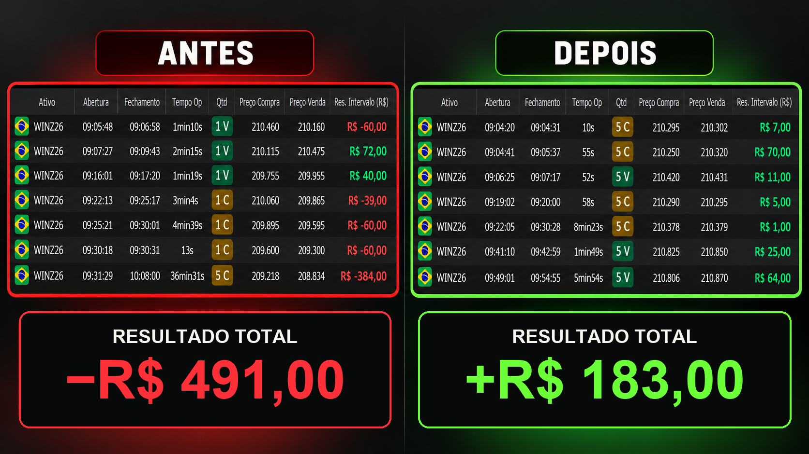
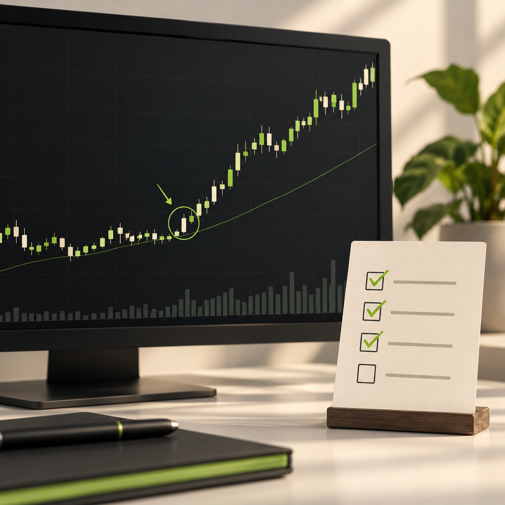
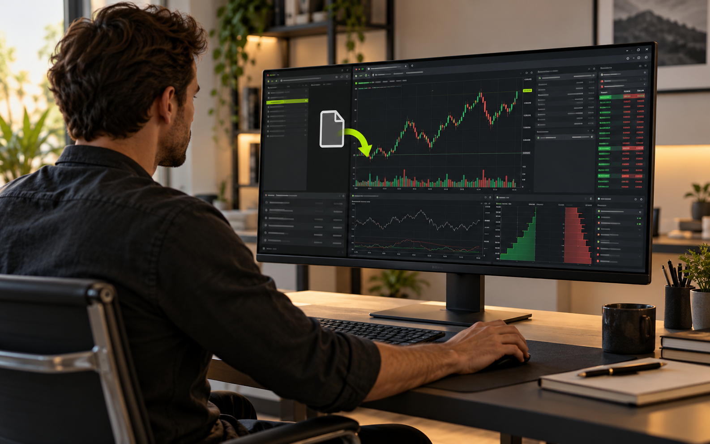
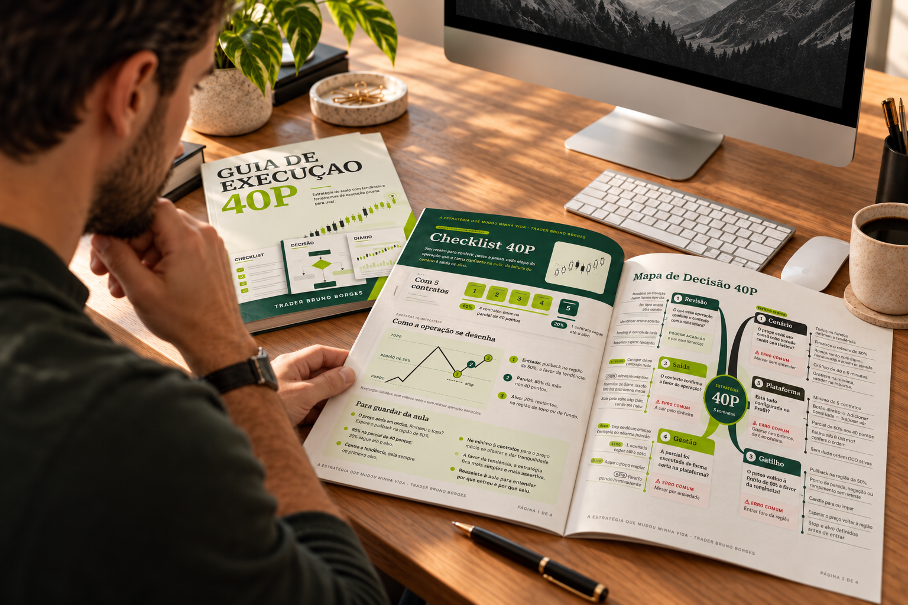
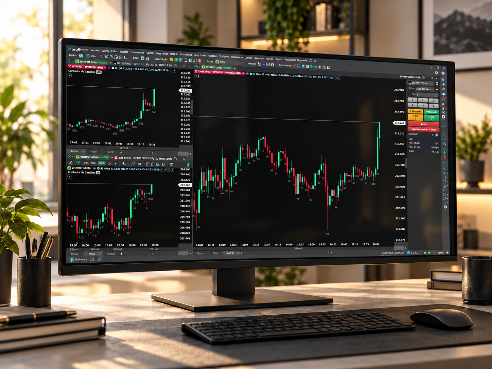
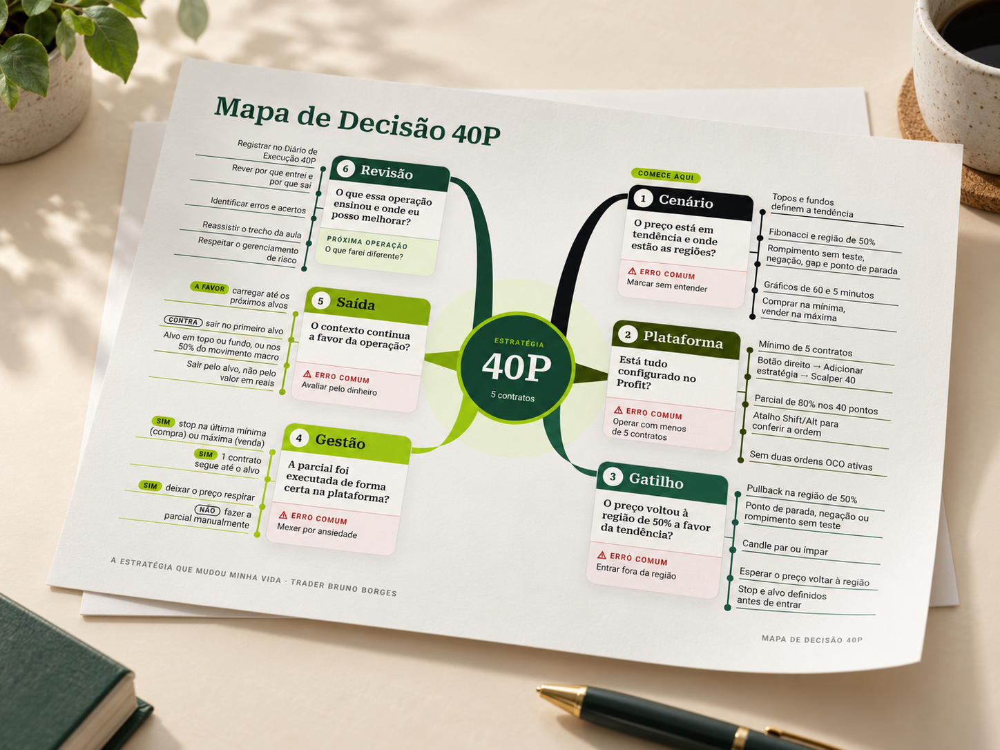
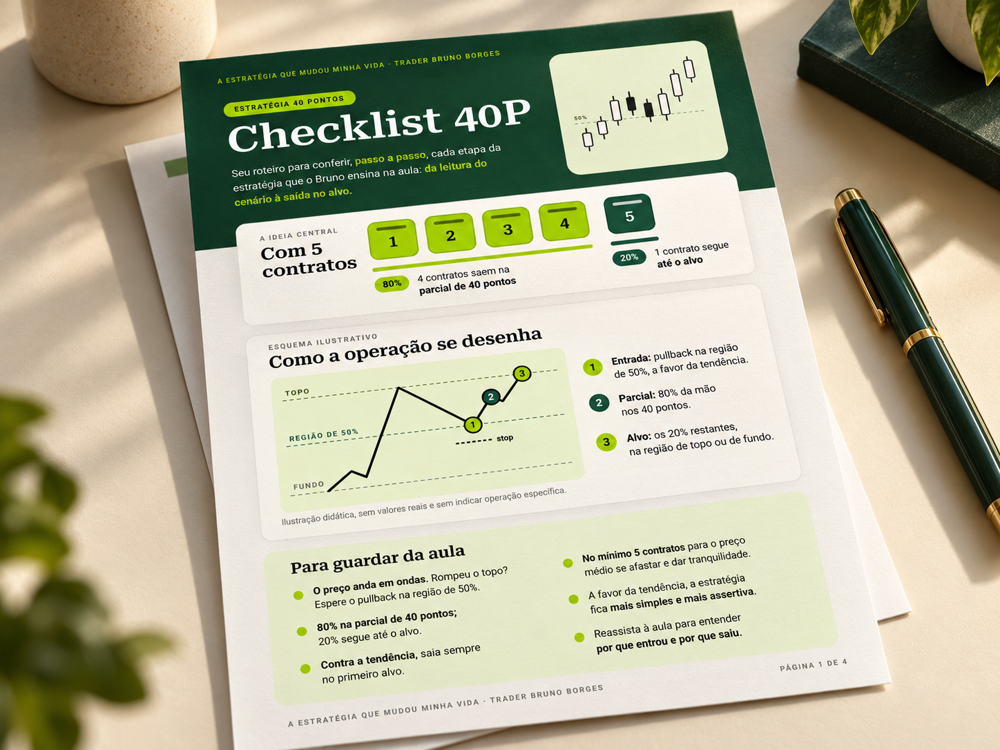
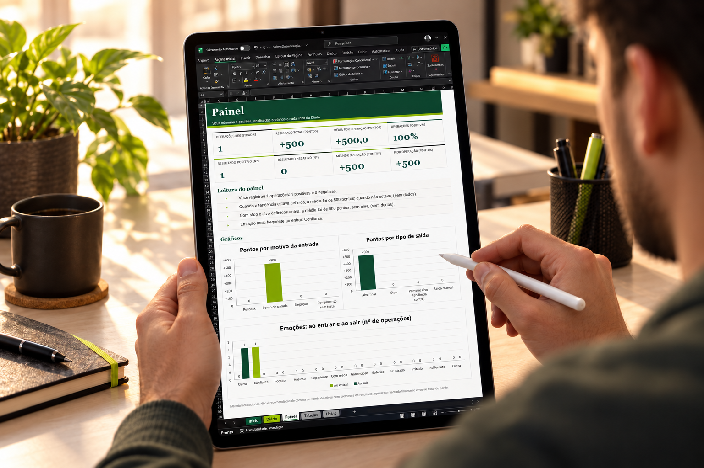
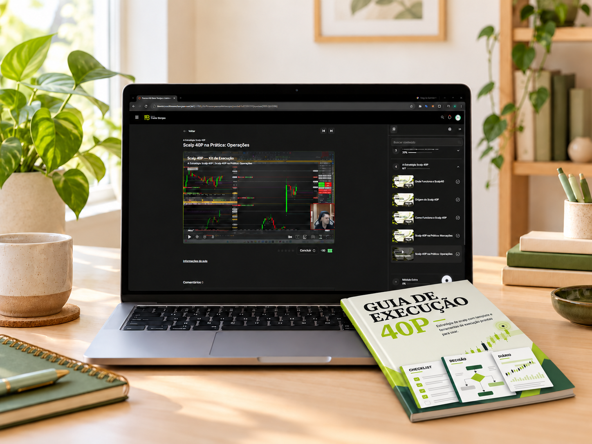
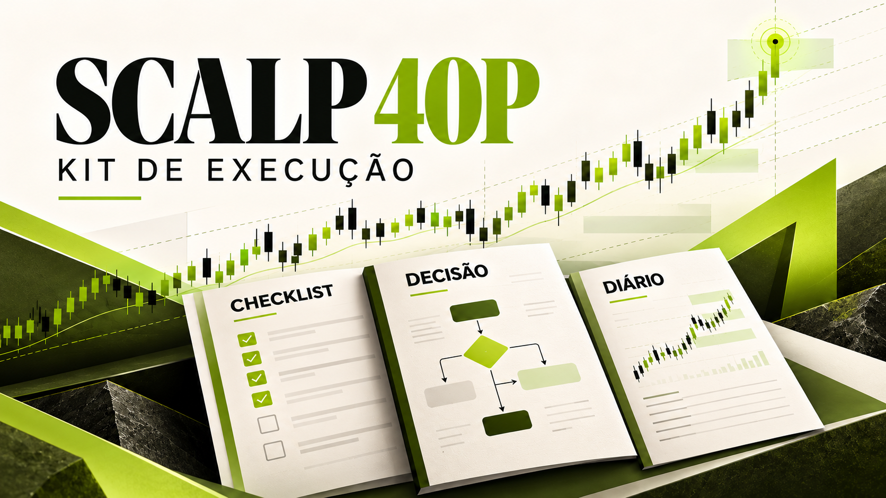

Utilize o Kit de Execução 40P para conseguir operar com mais calma e tranquilidade na frente do gráfico.
Só importar a tela operacional no Profit
Veja resultados e relatos reais de quem aplica a Estratégia 40P.
Registros de operações e mensagens compartilhadas por alunos.
Eu sei como é... você estuda e tenta seguir um plano... mas quando está na operação, a sua ansiedade e nervosismo tomam conta, não é?
Quando finalmente consegue parar e respirar... percebe que é mais um dia de loss.
Toda hora uma voz diferente na sua cabeça:
Você está cansado de terminar o pregão se perguntando se perdeu por causa do mercado ou por uma decisão que tomou no impulso.
Você quer sair positivo. E quer conseguir acompanhar uma operação com mais calma, sabendo quais critérios precisa observar, e não sofrer em toda operação que entra.

E se você tivesse esse processo ao seu lado?
E se você pudesse fazer isso de um jeito simples?
Com processo passo a passo para aplicar uma estratégia, assistir os vídeos de explicação e ter a sua disposição um material completo para análise, entrada, gestão e revisão das operações. Você utilizaria uma estratégia validada que dá tranquilidade e calma na frente do gráfico?
Se isso parece interessante, o Kit de Execução Scalp 40P pode te ajudar.
Com o Scalp 40P Kit de Execução, você poderá:
Assistir ela sendo aplicada na prática.

Importar a tela operacional pronta para você utilizar.

Consultar os materiais antes, durante e depois das operações.
Praticar e evoluir o seu operacional sem medo.
Registrar e revisar suas operações.
Conheça o que vem no seu
Kit de Execução 40P.
Estratégia 40P + Guia de Execução
Conheça a lógica da estratégia e consulte a qualquer momento todas as etapas dela. Aprofunde o seu conhecimento se quiser, o guia é completo e possui todas as informações que você precisa.

Tela operacional pronta para o Profit
Receba o arquivo da tela operacional do Profit para importar no seu Profit e começar a utilizar imediatamente. Você também poderá copiar a estratégia para outras ferramentas se desejar.

Mapa de Decisão 40P
Consulte o fluxo resumido em uma página e relembre as perguntas que orientam cada etapa da estratégia. Não fique perdido no meio dos candles, saiba o que fazer e quando fazer.

Checklist 40P
É como se fosse um parceiro de trading ao seu lado, dizendo exatamente o que precisa acontecer e o que fazer em cada caso, com boxes para marcar e seguir na aplicação da estratégia.

Diário de Execução 40P
Tenha um lugar pronto para receber suas operações e que faça a análise e consolidação dos dados de forma automática para sua evolução.
Você também recebe vídeos,
aplicações e replays como bônus.
A base para entender o raciocínio.
Se você quiser aprofundar ainda mais a sua leitura e conhecimento da estratégia, você vai receber um módulo bônus com vídeos sobre a base operacional do Método Trader de Sucesso. Assista e aplique na prática: obrigação dos candles, teoria de dow, fibonacci, e mais.
A Estratégia 40P no gráfico.
Para facilitar o seu entendimento e aplicação da estratégia, você vai receber outro módulo bônus com vídeos de marcações e utilização da Scalp 40P direto no gráfico pelo Bruno. Dizendo, exatamente, porque ele entrou e porque ele saiu de cada operação.

Bônus: duas aulas de aprofundamento em base operacional e Estratégia 40P, além dos replays de marcações e operações.
Estude no seu ritmo e volte aos conteúdos quando precisar revisar.
Acompanhe Bruno aplicando
a Estratégia 40P.
Veja o contexto, as marcações e o raciocínio de uma aplicação real do processo.
Esse é um vídeo educacional. Isso não é uma recomendação de compra ou venda de ativos.
O Kit de Execução Scalp 40P
foi organizado para você que:
- Está começando e quer utilizar uma estratégia validada com etapas bem definidas.
- Já opera, mas ainda tem dúvidas na frente do gráfico.
- Quer entender o raciocínio por trás das entradas e saídas.
- Busca mais organização para consultar, registrar e revisar suas operações.
- Quer evoluir o seu operacional no mercado financeiro.
Se você quer conhecer a Estratégia 40P e praticar com as ferramentas do Kit de Execução ao seu lado, veja tudo o que está incluído no seu acesso.
O seu acesso reúne:
- Guia de Execução 40P
- Tela operacional pronta para importar no Profit
- Mapa de Decisão 40P
- Checklist 40P
- Diário de Execução 40P
- Vídeos bônus de utilização direto no gráfico
O Kit completo e os conteúdos adicionais em um único acesso.
Leve o Kit de Execução completo e comece a aplicar uma nova estratégia.
Leve o Kit completo e comece a aplicar hoje mesmo.

12x de R$ 6,93
R$ 67,00 à vista
O checkout será conectado nesta prévia assim que o endereço de compra estiver disponível.
Compra pela Hotmart · Acesso vitalícioLiberação após aprovação do pagamento. 7 dias de garantia para avaliar o conteúdo.
Da compra ao primeiro estudo, o caminho é simples.
Da compra à utilização, o caminho é simples.
Faça sua compra.
Conclua o pagamento pela Hotmart e siga as instruções de acesso após a aprovação.
Acesse e baixe o Kit de Execução.
Entre na área de membros, baixe os materiais e importe a tela no Profit.
Estude e pratique.
Comece pelo Guia e pelas aulas. Consulte o Mapa e o Checklist no simulador e registre sua prática no Diário.
Acesse à área de membros pela Hotmart ou direto pelo alunos.traderbrunoborges.com.br.
O que você vai fazer agora?
Se esse é o próximo passo que você procura, o seu Kit está aqui.
Acesse seu Kit de Execução
Scalp 40P
12x de R$ 6,93
R$ 67,00 à vista
Total parcelado: R$ 83,16Prévia de navegação: na página publicada, este botão abrirá o checkout da Hotmart. A URL ainda será inserida.
Compra pela Hotmart · Acesso vitalícioLiberação após aprovação do pagamento7 dias de garantia para avaliar o conteúdo.